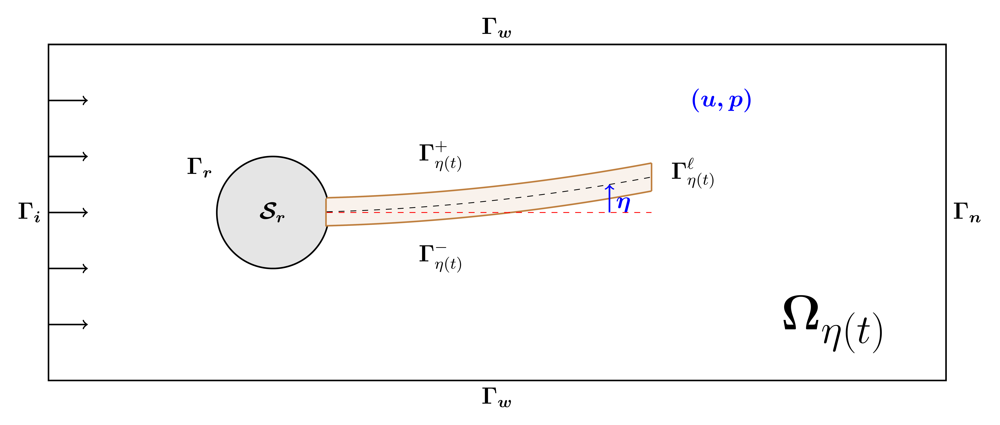
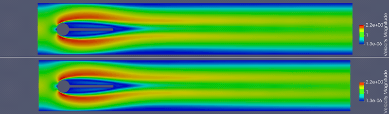

Stabilization of a fluid-structure interaction system
We consider a fluid-structure interaction (FSI) system in which the fluid is governed by the incompressible Navier–Stokes equations in a two–dimensional domain with mixed boundary conditions, while the structure, immersed in the fluid, is modeled by a damped Euler–Bernoulli equation, with one end clamped and the other free. Figure 1 shows the geometrical configuration.

The goal is to stabilize the nonlinear FSI system around the stationary solution using a finite-dimensional feedback control acting on the structure.
We follow a classical strategy. First, we design the control that stabilize the linearized FSI system and then apply it to the nonlinear FSI system.
The numerical implemention of the direct problem is treated by using the Arbitrary Lagrangian-Eulerian (ALE) approach and a semi-implicit time stepping scheme. To obtain the feedback law based on the linearized FSI system, we solve a low-dimensional Riccati equation.
Spectral analysis
In Figures 2 and 3, we compare the spectrum of the operator associated with the linearized FSI system, without and with control, respectively.


Evolution of the magnitude of the fluid velocity without and with control
To analyse the performance of the feedback control, we initialize the numerical simulation with the stationary solution and then introduce a perturbation at the inflow, as shown in Figure 4. This figure illustrates the behaviour of the magnitude of the fluid velocity in the nonlinear FSI system. On the top is shown the evolution of the system without control, while the bottom pannel shows the corresponding evolution when the control is applied.
